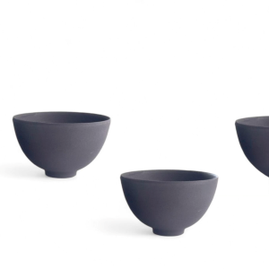

Aprende con nosotros
Si siempre has querido experimentar el arte de la cerámica, ¡nuestros workshops son para ti! Desde principiantes hasta avanzados, ofrecemos clases en grupos pequeños donde aprenderás desde el amasado y modelado de la arcilla hasta la aplicación de engobes y esmaltes.
Próximos talleres
Introducción al torno: Aprende a manejar el torno, crea tus primeras piezas y esmaltalas.

Taller de moldes: Experimenta con moldes de yeso para crear piezas en serie.

Curso avanzado de esmaltes: Descubre el arte de mezclar y aplicar esmaltes únicos para crear acabados espectaculares.
Todos los talleres incluyen el uso de herramientas y materiales.
¡Inscríbete hoy y transforma la arcilla en arte!